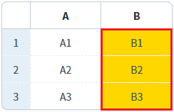
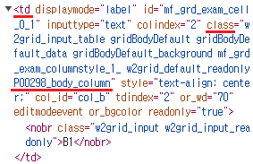
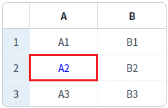
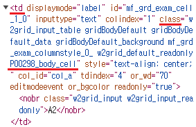
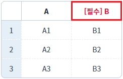
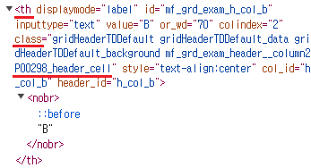

[GridView] 바디 컬럼, 바디 셀, 헤더 셀의 클래스를 스크립트로 적용하기
1개요
GridView의 메소드를 사용하여 바디 컬럼과 바디 셀, 헤더 셀에 CSS 클래스를 설정하는 예제입니다.
예제에서 사용한 메소드는 다음과 같습니다.
setColumnClass: 바디 컬럼의 클래스를 설정합니다.
setCellClass: 바디 셀의 클래스를 설정합니다.
setHeaderClass: 헤더 셀의 클래스를 설정합니다.
설정된 Class를 제거하는 주요 메소드는 다음과 같습니다.
- removeColumnClass: 바디 컬럼의 클래스를 제거합니다.
- removeCellClass: 바디 셀의 클래스를 제거합니다.
- removeHeaderClass: 헤더 셀의 클래스를 제거합니다.
2구현된 기능
스크립트로 바디 컬럼에 클래스 설정하기
스크립트로 바디 셀에 클래스 설정하기
스크립트로 헤더 셀에 클래스 설정하기
3예제 테스트 방법
3.1스크립트로 바디 컬럼에 클래스 설정하기
1
STEP 1: 초기 상태를 확인합니다.
스타일이 설정되지 않은 GridView가 구성되어 있습니다.
Image 1.브라우저(Chrome) 실행 예시

2
STEP 2: 스크립트로 바디 컬럼에 클래스를 설정합니다.
"바디 컬럼 'B'에 class 'P00298_body_column' 설정하기" 버튼을 클릭합니다.3
STEP 3: 실행된 결과를 확인합니다.
GridView의 바디 컬럼 'B'에 class 'P00298_body_column'이 설정됩니다.
Image 2.브라우저(Chrome) 실행 예시

Image 3.브라우저(Chrome)의 개발자 도구 탭 'Elements'

3.2스크립트로 바디 셀에 클래스 설정하기
1
STEP 1: 초기 상태를 확인합니다.
스타일이 설정되지 않은 GridView가 구성되어 있습니다.
Image 4.브라우저(Chrome) 실행 예시
2
STEP 2: 스크립트로 바디 셀에 클래스를 설정합니다.
"바디 컬럼 'A'의 두 번째 로우의 셀에 class 'P00298_body_cell' 설정하기" 버튼을 클릭합니다.3
STEP 3: 실행된 결과를 확인합니다.
GridView의 바디 컬럼 'A'의 두 번째 로우의 셀에 class 'P00298_body_cell'이 설정됩니다.
Image 5.브라우저(Chrome) 실행 예시

Image 6.브라우저(Chrome)의 개발자 도구 탭 'Elements'

3.3스크립트로 헤더 셀에 클래스 설정하기
1
STEP 1: 초기 상태를 확인합니다.
스타일이 설정되지 않은 GridView가 구성되어 있습니다.
Image 7.브라우저(Chrome) 실행 예시
2
STEP 2: 스크립트로 헤더 셀에 클래스를 설정합니다.
"헤더 컬럼 'B'에 class 'P00298_header_cell' 설정하기" 버튼을 클릭합니다.3
STEP 3: 실행된 결과를 확인합니다.
GridView의 헤더 컬럼 'B'에 class 'P00298_header_cell'이 설정됩니다.
Image 8.브라우저(Chrome) 실행 예시

Image 9.브라우저(Chrome)의 개발자 도구 탭 'Elements'

4구현 예제
4.1[공통] class 정의하기
프로젝트에서 import하고 있는 CSS 파일에 아래와 같이 class를 정의합니다. 기 선언된 공통 class의 selector 우선 순위에서 밀릴 수 있기 때문에 구체적으로 선언하는 것이 좋습니다. 정의된 class별 사용 목적은 다음과 같습니다.
P00298_header_cell : GridView의 헤더 셀에 설정
P00298_body_cell : GridView의 바디 셀에 설정
P00298_body_column : GridView의 바디 컬럼에 설정
Example 1.CSS
/* 다음의 경로에서 class를 확인할 수 있습니다. */ /* [프로젝트 경로]/WebContent/css/example.css */ /* P00298.xml 클래스 설정 예제 */ .P00298_header_cell nobr { color: #DC143C; } .P00298_header_cell nobr:before { content: "[필수] "; } .P00298_body_cell > * { color: #0000FF; } .P00298_body_column { background-color: #FFD700 !important; }
4.2스크립트로 바디 컬럼에 클래스 설정하기
GridView의 'setColumnClass' 메소드를 사용하여 스크립트를 작성합니다. 세부 설정은 아래의 스크립트 예시에 작성되어 있습니다.
Example 2.Script
//예제 파일에서는 스크립트 scwin.btn_exam1_1_onclick에 작성되어 있습니다. // GridView 'grd_exam'의 바디 컬럼 ID가 'col_b'인 컬럼에 class 'P00298_body_column'을 설정합니다. grd_exam.setColumnClass("col_b", "P00298_body_column");
4.3스크립트로 바디 셀에 클래스 설정하기
GridView의 'setCellClass' 메소드를 사용하여 스크립트를 작성합니다. 세부 설정은 아래의 스크립트 예시에 작성되어 있습니다.
Example 3.Script
//예제 파일에서는 스크립트 scwin.btn_exam2_1_onclick에 작성되어 있습니다. // GridView 'grd_exam'의 바디 컬럼 ID가 'col_b'인 컬럼의 두 번째 셀에 class 'P00298_body_cell'을 설정합니다. grd_exam.setCellClass(1, "col_b", "P00298_body_cell");
4.4스크립트로 헤더 셀에 클래스 설정하기
GridView의 'setHeaderClass' 메소드를 사용하여 스크립트를 작성합니다. 세부 설정은 아래의 스크립트 예시에 작성되어 있습니다.
Example 4.Script
//예제 파일에서는 스크립트 scwin.btn_exam3_1_onclick에 작성되어 있습니다. // GridView 'grd_exam'의 헤더 컬럼 ID가 'h_col_b'인 셀에 class 'P00298_header_cell'을 설정합니다. grd_exam.setHeaderClass("h_col_b", "P00298_header_cell");
5주요 API
setColumnClass( colIndex , className )
setCellClass( rowIndex , colIndex , className )
setHeaderClass( headerId , className )
removeColumnClass( colIndex , className )
removeCellClass( rowIndex , colIndex , className )
removeHeaderClass( headerId , className )